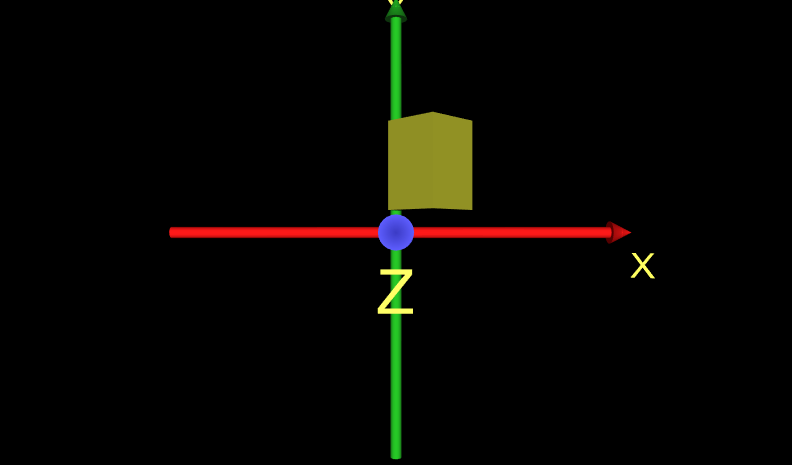
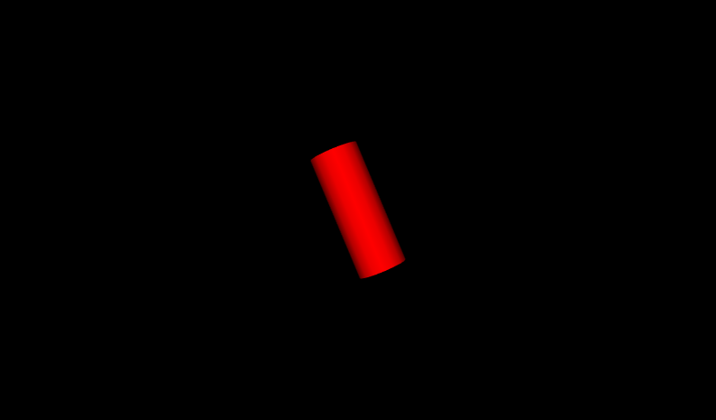
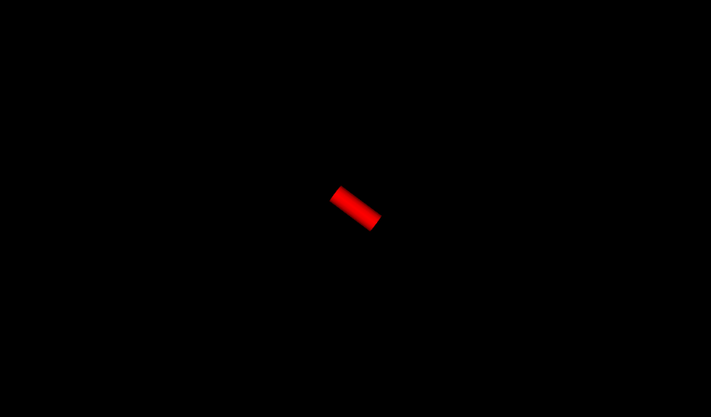
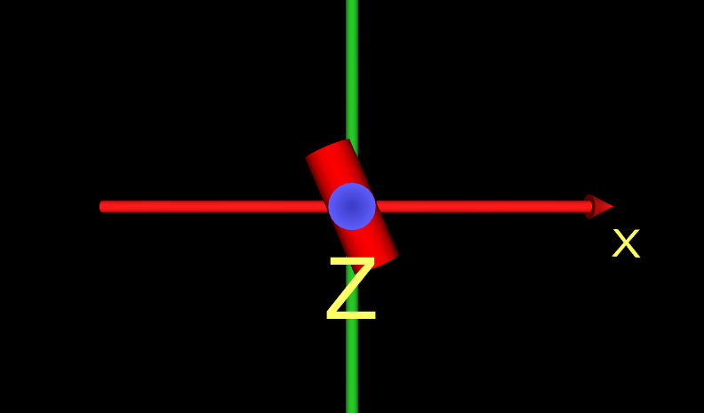
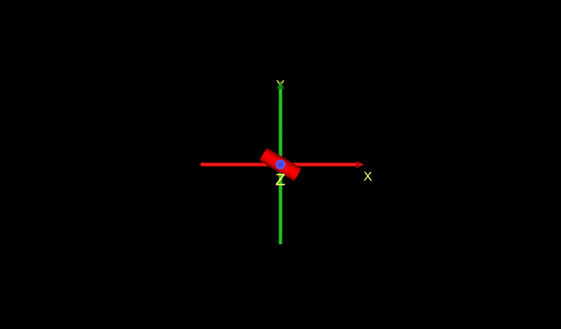
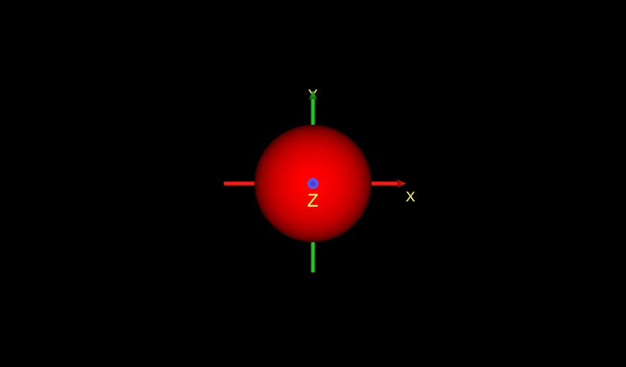

|
The TimeSensor node is similar to a stop watch: you control the start and stop time, it generates time events while running.
It can loop forever, or run through only one cycle and stop.
To animate a scene, route time events into other nodes.
PositionInterpolator can convert time events into 3D position or scale values.
OrientationInterpolator can animate rotation values.
ColorInterpolator can animate color values, and ScalarInterpolator can animate transparency values.
These X3D scenes are adapted directly from the
original VRML 2.0 Sourcebook chapter examples.
Also available:
Introduction to VRML97 SIGGRAPH98 course notes.
|


![[1] Figure08.3PositionInterpolator.x3d - (default X3D view from 0 0 10)](_viewpoints/Figure08.3PositionInterpolator.x3d._VP_Default_viewpoint.png){kind=link}
![[2] Figure08.3PositionInterpolatorWithAxes.x3d - (default X3D view)](_viewpoints/Figure08.3PositionInterpolatorWithAxes.x3d._VP_Default_viewpoint.png){kind=link}
![[3] Figure08.4OrientationInterpolator.x3d - Figure 8.4 OrientationInterpolator](_viewpoints/Figure08.4OrientationInterpolator.x3d._VP_Figure_8.4_OrientationInterpolator.png){kind=link}
![[4] Figure08.4OrientationInterpolator.x3d - (default X3D view from 0 0 10)](_viewpoints/Figure08.4OrientationInterpolator.x3d._VP_Default_viewpoint.png){kind=link}
![[5] Figure08.4OrientationInterpolatorWithAxes.x3d - Figure 8.4 OrientationInterpolatorWithAxes](_viewpoints/Figure08.4OrientationInterpolatorWithAxes.x3d._VP_Figure_8.4_OrientationInterpolatorWithAxes.png){kind=link}
![[6] Figure08.4OrientationInterpolatorWithAxes.x3d - (default X3D view)](_viewpoints/Figure08.4OrientationInterpolatorWithAxes.x3d._VP_Default_viewpoint.png){kind=link}
![[7] Figure08.5AnimatingScale.x3d - (default X3D view from 0 0 10)](_viewpoints/Figure08.5AnimatingScale.x3d._VP_Default_viewpoint.png){kind=link}
![[8] Figure08.5AnimatingScaleWithAxes.x3d - (default X3D view from 0 0 10)](_viewpoints/Figure08.5AnimatingScaleWithAxes.x3d._VP_Default_viewpoint.png){kind=link}